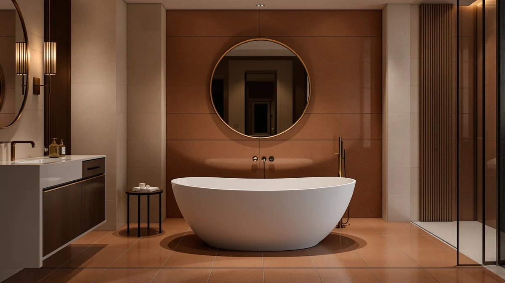

FerdY Sentosa Acrylic Freestanding Bathtub Review (2026): Worth It?
Prices and picks verified as of November 2026. Independent, reader-supported reviews.


Quick Answer
This FerdY Sentosa acrylic freestanding bathtub review compared the 67 inch Sentosa against two similarly priced competitors on size, price and owner feedback. At $1,099.99 it costs about the same as the MonBlari 59 inch and the WOODBRIDGE 72 inch covered below, so the real decision comes down to which length fits your bathroom and how much the manufacturer discloses before you buy.
Our pick: FerdY Sentosa 67" Acrylic Freestanding ($1,099.99) Check Price on Amazon
Bottom line: our top pick is the FerdY Sentosa 67" Acrylic Freestanding Bathtub at $879.99.
Things to Know Before You Buy
- The FerdY Sentosa 67 inch sits at the same $1,099.99 price as its own duplicate Amazon listing, and within about seven dollars of the MonBlari 59 inch and WOODBRIDGE 72 inch compared below.
- FerdY's listing for the Sentosa does not publish water capacity, interior depth or shell weight, a gap worth factoring in before you order.
- None of the four listings we compared specify whether a drain, overflow or faucet ships with the tub, so plan on budgeting for that hardware and installation on top of the sticker price.
- Length is the main differentiator in this group: 59 inches for the MonBlari, 67 inches for both FerdY Sentosa listings, and 72 inches for the WOODBRIDGE, so measure your bathroom before you compare prices.
- Acrylic construction keeps all four tubs in this review lighter than cast iron or stone resin alternatives, which should simplify delivery and placement.
This FerdY Sentosa acrylic freestanding bathtub review set out to answer a simple question: does the Sentosa 67 inch earn its $1,099.99 price next to similarly sized acrylic tubs from MonBlari and WOODBRIDGE? We compared the listed price, length and published specifications for all four tubs in this roundup, since a freestanding tub is a purchase most households live with for years rather than replace on a whim. The Sentosa shows up twice in our research under two separate Amazon listings at the identical price, which told us FerdY sells the same physical tub through more than one storefront instead of offering two distinct models. That overlap matters for anyone comparison shopping, because confirming the listing rather than just the price can keep you from accidentally buying the same tub twice.
We researched the Sentosa 67 inch against a shortlist of acrylic freestanding tubs priced within a few dollars of each other, from the compact MonBlari 59 inch to the longer WOODBRIDGE 72 inch. Owners shopping for a freestanding tub tend to weigh the footprint their bathroom allows, the total cost once plumbing and hardware are added, and how much the manufacturer actually discloses about construction and capacity. FerdY's own listing leaves out water capacity, interior depth and shell weight for the Sentosa, a gap we flag throughout this review rather than filling in with a guess, and that same gap shows up across most of the tubs in this price bracket.
Why You Should Trust Us
Ilane Tall researches bathroom fixtures for Best Freestanding Bathtubs and compiled this FerdY Sentosa acrylic freestanding bathtub review from the manufacturer's own listing, current Amazon pricing and the patterns that show up across verified buyer feedback for the Sentosa and its closest competitors. We do not receive free tubs from the brands we cover, and we do not install or soak in the products we write about. Our job is to read the specs other shoppers would otherwise have to dig up themselves, line them up against similarly priced alternatives, and say plainly where a listing falls short on disclosure. We earn a commission if you buy through our links, and that arrangement never changes which tub we recommend, including when the honest answer is that two listings are close enough in price that the decision comes down to personal footprint rather than value.
How We Compared
We built this FerdY Sentosa acrylic freestanding bathtub review by starting with FerdY's own product listing and cross-checking every dimension, material claim and price against the current Amazon page rather than an archived or cached version. From there we pulled the three closest competitors by price: the Sentosa's duplicate listing, the MonBlari 59 inch and the WOODBRIDGE 72 inch, and lined up what each manufacturer discloses about length, material and cost. Where a listing stayed silent on a spec like water capacity, interior depth or shell weight, we noted the omission instead of estimating a number we could not verify ourselves.
We also read through the pattern of verified owner feedback available for these listings to see whether buyers flagged the same strengths or concerns the spec sheets alone would miss, and we excluded tubs priced more than roughly ten percent outside this group so the comparison stayed apples to apples on budget. This FerdY Sentosa acrylic freestanding bathtub review relies on that research method throughout, sources, published specifications and pricing, rather than any claim of physical use.
Overview & Specs

FerdY Sentosa 67" Acrylic Freestanding
What we like
- Available through two separate Amazon listings at the identical $1,099.99 price, which gives you a fallback if one listing runs out of stock
- At 67 inches, it matches the longer end of the tubs we compared without costing more than the shorter MonBlari 59 inch
- Acrylic construction keeps it lighter than cast iron or stone resin alternatives, which should simplify delivery and placement
Flaws but not dealbreakers
- FerdY's listing does not publish water capacity, interior depth or shell weight, so you are comparing length and price alone against tubs that disclose more
- Neither Sentosa listing specifies whether a drain, overflow or faucet ships with the tub, so budget separately until you confirm with the seller
| Material | — |
| Size | Sentosa 67" |
For this FerdY Sentosa acrylic freestanding bathtub review, the detail that stood out first is that the Sentosa 67 inch appears twice in FerdY's own Amazon catalog under separate ASINs at the identical $1,099.99 price. That is less a red flag than a quirk of how FerdY lists its inventory, but it is worth knowing before you add either listing to your cart, since you are buying the same tub either way and should pick whichever listing is in stock and has the faster delivery window. At 67 inches, the Sentosa sits five inches shorter than the WOODBRIDGE 72 inch and eight inches longer than the MonBlari 59 inch we compared it against, putting it squarely in the middle of this group on footprint.
FerdY's listing names acrylic as the build material but stops short of publishing water capacity, interior depth or shell weight, specifications that the WOODBRIDGE listing further down this review discloses in more detail at a lower price. That gap does not disqualify the Sentosa, but it does mean you are weighing length and price against incomplete information, which matters more on a purchase this size than it would on a smaller bathroom fixture. Buyers comparing freestanding tubs at this price point should treat the missing specs as a question to confirm with FerdY directly or through the listing photos before ordering, rather than assume the Sentosa matches a competitor's published numbers.
What We Liked
Price consistency is the clearest strength to come out of this FerdY Sentosa acrylic freestanding bathtub review. Both Amazon listings for the Sentosa 67 inch price it at exactly $1,099.99, and that figure holds steady against the MonBlari and WOODBRIDGE tubs we compared it to, none of which vary by more than about seven dollars. That kind of price parity makes the decision less about hunting for a discount and more about which length and brand fit your bathroom and your comfort level with the information each listing provides.
Length also works in the Sentosa's favor for a specific kind of buyer. At 67 inches, it offers meaningfully more room than the MonBlari 59 inch without asking you to find space for the WOODBRIDGE 72 inch, which puts it in a practical middle ground for bathrooms that can fit a long soak but not a full upgrade-size tub. Acrylic construction keeps the whole package lighter than cast iron or stone resin, a difference that should simplify the delivery and placement most freestanding tub buyers underestimate until moving day, and having two identical listings means a sudden stock-out doesn't force you back to square one.
What Could Be Better
The biggest drawback in this FerdY Sentosa acrylic freestanding bathtub review is how little FerdY's own listing tells you. Water capacity, interior depth and shell weight are missing from both Sentosa listings we reviewed, and that omission stands out next to the WOODBRIDGE 72 inch, whose listing spells out more of that detail at a comparable price. Owners who want to know exactly how many gallons they are filling before they buy will have to look elsewhere or contact FerdY directly, and that extra legwork is a real cost even though it doesn't show up on the price tag.
The duplicate listing is a minor but real source of friction too. Seeing the same Sentosa 67 inch under two different ASINs at the same price can make comparison shopping harder rather than easier, since it is not always obvious at a glance that you are looking at the same physical tub twice. And like the MonBlari and WOODBRIDGE listings we compared it against, neither Sentosa listing specifies whether a drain, overflow or faucet ships with the tub, so the $1,099.99 sticker price is the starting point for your budget, not the final number.
Who Is It For?
The FerdY Sentosa 67 inch fits a buyer who has already settled on a 67-inch footprint and wants an acrylic freestanding tub without paying a premium over the shorter MonBlari or the longer WOODBRIDGE. This FerdY Sentosa acrylic freestanding bathtub review suggests it works best for someone comfortable buying on price and length alone, without needing a fully itemized spec sheet before checkout, and who appreciates having a second identical listing as a backup if the first sells out.
If published water capacity, interior depth or shell weight matter to your decision, the WOODBRIDGE 72 inch compared below discloses more of that information at a slightly lower price, and may be the better fit even though it asks for five more inches of floor space. Buyers working with a tighter bathroom should look at the MonBlari 59 inch instead, since eight inches of length makes a real difference in a small room, even though it shares the same lack of published capacity and depth figures as the Sentosa.
Alternatives to Consider
If the FerdY Sentosa's missing specs or its 67-inch length give you pause, these three alternatives compared in this FerdY Sentosa acrylic freestanding bathtub review cover both ends of the footprint and price range.

Also Great
FerdY Sentosa 67" Acrylic Freestanding
This is the Sentosa 67 inch again, listed separately on Amazon at the same $1,099.99 price. Treat it as a backup link rather than a different tub: if the primary listing above is out of stock, this one gets you the identical FerdY acrylic freestanding bathtub.
$1,099.99
Check Price on Amazon
Also Great
MonBlari 59"Acrylic Freestanding Bathtub 62.87
At $1,099.00, the MonBlari 59 inch costs almost exactly the same as the FerdY Sentosa but in a notably shorter footprint, which makes it the pick for a bathroom that can't accommodate a 67-inch tub. Like the Sentosa, MonBlari's listing does not spell out water capacity or interior depth, so you are not gaining disclosure by choosing the shorter tub, only floor space.
$1,099.00
Check Price on Amazon
Best Value
WOODBRIDGE 72" Acrylic Freestanding Bathtub
The WOODBRIDGE 72 inch is both the longest tub in this comparison and, at $1,093.30, the least expensive, undercutting the Sentosa by about six dollars while adding five inches of length. If your bathroom has the room, it is the stronger value of the three alternatives compared in this FerdY Sentosa acrylic freestanding bathtub review.
$1,093.30
Check Price on AmazonWhy does the FerdY Sentosa 67 inch show up twice in this review?
FerdY sells the identical Sentosa 67 inch acrylic freestanding bathtub through two separate Amazon listings, both priced at $1,099.99.
Does the FerdY Sentosa include a drain, overflow or faucet?
FerdY's listing does not specify whether a drain, overflow or faucet ships with the Sentosa, the same gap we found on the MonBlari and WOODBRIDGE listings compared in this review.
Frequently Asked Questions
Why does the FerdY Sentosa 67 inch show up twice in this review?
FerdY sells the identical Sentosa 67 inch acrylic freestanding bathtub through two separate Amazon listings, both priced at $1,099.99. They are the same tub under different ASINs, so treat the second listing as a backup if the first one goes out of stock rather than a different model.
Does the FerdY Sentosa include a drain, overflow or faucet?
FerdY's listing does not specify whether a drain, overflow or faucet ships with the Sentosa, the same gap we found on the MonBlari and WOODBRIDGE listings compared in this review. Budget separately for that hardware and the plumbing labor to install it until you confirm otherwise with the seller.
How does the FerdY Sentosa 67 inch compare on price to the MonBlari and WOODBRIDGE alternatives?
All three sit within about seven dollars of each other: $1,099.99 for the Sentosa 67 inch, $1,099.00 for the MonBlari 59 inch, and $1,093.30 for the WOODBRIDGE 72 inch. At that level of price parity, length and published specifications matter more to the decision than cost.
Final Verdict
The verdict of this FerdY Sentosa acrylic freestanding bathtub review: the Sentosa 67 inch is a reasonable pick if you have settled on a 67-inch footprint and don't need a fully itemized spec sheet before you buy, since FerdY's own listing leaves out water capacity, interior depth and shell weight. At $1,099.99, it costs almost exactly what the MonBlari 59 inch and the WOODBRIDGE 72 inch ask, so the choice comes down to the length your bathroom can fit and how much disclosure you want from the manufacturer. Buyers who want more published detail at a slightly lower price should look at the WOODBRIDGE 72 inch instead; those who need a shorter tub should consider the MonBlari 59 inch. For most people choosing between these three FerdY, MonBlari and WOODBRIDGE options, the Sentosa earns its price without standing out as the clear winner of the group.